半無限プログラミングを使用した不確定性の影響の解析
このデモでは、最適化問題のモデル パラメーターにおける不確定性の影響を調べるために半無限プログラミングを使用する方法を示します。関数 fseminf (Optimization Toolbox™ の半無限プログラミング ソルバー) を使用して、最適化問題を公式化し、解きます。
このデモでは、大気汚染の制御にかかわる問題を扱います。具体的には、特定の地理的区域に複数の大煙突が建てられます。それぞれの大煙突が高くなると、煙突からの汚染物質の地表濃度が減少します。しかし、それぞれの煙突の建設費は高さに伴って増加します。汚染物質の地表濃度が規制による制限を超えないことを前提に、大煙突の累積的な高さ、すなわち、建設費を最小にするための問題を解いていきます。この問題は、以下の参考文献に記述されています。
『Air pollution control with semi-infinite programming』A.I.F. Vaz and E.C. Ferreira, XXVIII Congreso Nacional de Estadistica e Investigacion Operativa, October 2004
このデモでは、最初に、煙突の最小限の高さという問題として上記の論文で発表されている問題を解きます。この問題におけるモデルは、いくつかのパラメーターに依存しますが、そのうちの 2 つは風速と風向です。すべてのモデル パラメーターは、問題の最初の解で正確にわかっているものと仮定します。
次に、風速と風向のパラメーターを所定の範囲内で変化できるようにすることで、元の問題を拡張します。これにより、この問題の最適解に対する、これらのパラメーター内の不確定性の影響を解析できるようになります。
目次
煙突の最小限の高さという問題
20km 四方の領域 R に 10 本の大煙突を建設するとします。これらの大煙突から大気中に放出される数種類の汚染物質のうちに、二酸化硫黄が含まれています。煙突の x y 位置は固定されていますが、高さは変わることがあります。
煙突の建設会社は、煙突の高さの合計、つまり建設費を最小限に抑えたいと考えるでしょう。しかし、このことは、領域 R 内の任意の地点における二酸化硫黄の濃度が規制の最大値を超えてはならないという要件とのトレードオフです。
まず、初期高さで大煙突をプロットしてみましょう。大煙突が含まれている、R 内の 4km 四方の小領域を拡大していることに注意してください。
h0 = [210;210;180;180;150;150;120;120;90;90];
plotChimneyStacks(h0, 'Chimney Stack Initial Height');
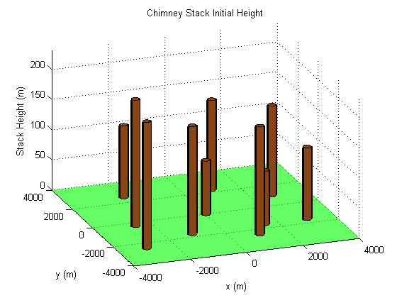 この問題には、環境に関する 2 つのパラメーターがあります。それは、風速と風向です。このデモの後半で、これらのパラメーターを変更できるようにしますが、最初の問題については、これらのパラメーターを標準値に設定します。
% Wind direction in radians theta0 = 3.996; % Wind speed in m/s U0 = 5.64;
さて、領域 R 全体における二酸化硫黄 (SO2) の地表濃度をプロットします (大煙突のプロットは小領域であったことを思い出してください)。SO2 濃度は、大煙突を初期高さに設定して計算されています。
SO2 の濃度が関心領域の全体にわたって変化することがわかります。二酸化硫黄グラフには、注目すべき 2 つの特徴があります。
- SO2 濃度は、(x,y) 平面の左上隅で高い
- SO2 濃度は、領域の至る所でほぼゼロである
簡潔に言えば、第 1 の特徴の原因は卓越風です。この例では、卓越風によって SO2 が (x,y) 平面の左上に吹き寄せられているのです。第 2 の特徴の原因は、拡散によって SO2 が地面に運ばれていることです。これは卓越風に比べて緩やかな過程であり、SO2 は関心領域の左上隅の地表にのみ到達します。
大煙突からの大気拡散の詳細は、上記の参考文献を参照してください。
ピンクの面は、SO2 の濃度 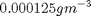 を示します。これが規制による最大値で、二酸化硫黄は領域 R においてこの値を超えてはなりません。このグラフからはっきりと見て取れるのは、大煙突の初期高さでは、SO2 濃度が最大値を超えるということです。
MATLAB ファイル concSulfurDioxide を調べて、二酸化硫黄濃度の計算方法を確認してください。
plotSulfurDioxide(h0, theta0, U0, ... 'Sulfur Dioxide Concentration at Initial Stack Height');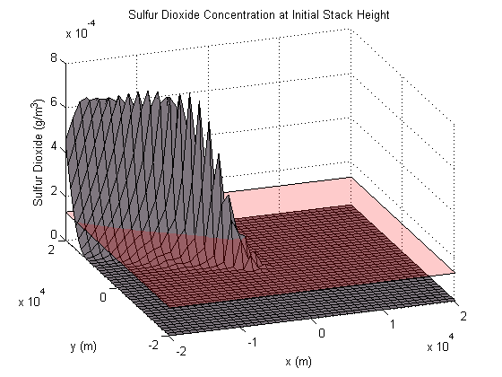
fseminf の機能
煙突の最小限の高さという問題を解く前に、fseminf で半無限問題がどのように解かれるのかを説明します。一般的な半無限プログラミング問題は、以下のように表すことができます。
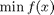
条件
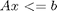 (線形不等式制約)
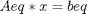 (線形等式制約)
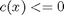 (非線形不等式制約)
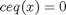 (非線形等式制約)
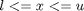 (範囲)
および
 、このとき 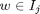、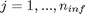 (非線形半無限制約)
、このとき 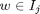、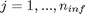 (非線形半無限制約)
このアルゴリズムでは、補助変数 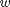 の区間で満たす必要のある、非線形最適化問題の制約を指定できます。fseminf では、この変数は各半無限制約について 1 次元または 2 次元のいずれかに限定されることに注意してください。
関数 fseminf は、初期値 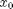 を取り、最適解 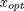 を求めるために反復計算を行うことによって、一般的な半無限問題を解きます。
このアルゴリズムで重要なのは、「半無限」制約 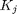 の取り扱いです。 では、 が区間 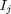 のあらゆる の値で可解でなければなりません。この制約は、区間 で、 についての のすべての極大値を考慮することで簡素化できます。元の制約は、上記のそれぞれの極大値で が可解でなければならないという条件に等しくなります。
関数 fseminf は、それぞれの半無限制約 のすべての極大値の近似値を求めます。このためには、まず、 値のメッシュでのそれぞれの半無限制約を計算します。次に、求められた半無限制約から のすべての極大値を計算するために、単純な差分法を使用します。
後で確認するように、このメッシュを制約関数で作成します。メッシュの各 座標の間隔は、関数 fseminf によって制約関数に与えられます。
このアルゴリズムの各反復において、以下の手順が実行されます。
- 各 座標の現在のメッシュの間隔を使用して、 値のメッシュの を求めます。
- 手順 1 で求めた を使用して、 のすべての極大値の近似値を計算します。
- 一般的な半無限問題にある各 を、上の手順 1 ～ 2 で求めた極大値に置き換えます。これで、問題が有限個の非線形制約を持つことになります。fseminf は、fmincon で使用される SQP アルゴリズムを使用して、変更された問題の反復計算を 1 回実行します。
- 新しい点 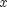 で、SQP アルゴリズムの停止条件が満たされたかどうかを確認します。いずれかの基準が満たされている場合、アルゴリズムが終了します。そうでない場合、fseminf の処理が手順 5 に進みます。たとえば、手順 3 で定義された問題の 1 次の最適性の値が、指定された許容値を下回る場合、fseminf は終了します。
- 手順 1 における半無限制約の評価で使用されたメッシュ間隔を更新します。
非線形制約関数の記述
fseminf を呼び出して問題を解く前に、この問題における非線形制約を評価するための関数を記述しなければなりません。ここで指定する制約は、R のどの場所でも地表の SO2 濃度が を超えてはならないということです。
これは半無限制約です。ここでは、この制約関数の実装について説明します。煙突の最小限の高さという問題に関しては、MATLAB ファイル airPollutionCon で制約を実装しています。
type airPollutionCon.m
function [c, ceq, K, s] = airPollutionCon(h, s, theta, U)
%AIRPOLLUTIONCON Constraint function for air pollution demo
%
% [C, CEQ, K, S] = AIRPOLLUTIONCON(H, S, THETA, U) calculates the
% constraints for the air pollution Optimization Toolbox (TM) demo.This
% function first creates a grid of (X, Y) points using the supplied grid
% spacing, S. The following constraint is then calculated over each point
% of the grid:
%
% Sulfur Dioxide concentration at the specified wind direction, THETA and
% wind speed U <= 1.25e-4 g/m^3
%
% See also AIRPOLLUTION
% Copyright 2008 The MathWorks, Inc.
% $Revision: 1.1.4.12.2.1 $ $Date: 2010/07/29 21:28:56 $
% Initial sampling interval
if nargin < 2 || isnan(s(1,1))
s = [1000 4000];
end
% Define the grid that the "infinite" constraints will be evaluated over
w1x = -20000:s(1,1):20000;
w1y = -20000:s(1,2):20000;
[t1,t2] = meshgrid(w1x,w1y);
% Maximum allowed sulphur dioxide
maxsul = 1.25e-4;
% Calculate the constraint over the grid
K = concSulfurDioxide(t1, t2, h, theta, U) - maxsul;
% Rescale constraint to make it 0(1)
K = 1e4*K;
% No finite constraints
c = [];
ceq = [];
この関数は、半無限プログラミング問題に対する制約関数の一般的な構造を示しています。特に、fseminf の制約関数は以下の 3 つの部分に分けることができます。
1. 制約評価のための初期メッシュ サイズの定義
fseminf は、これらの制約の計算全体の一部としてメッシュ全体にわたって "半無限" 制約を評価する、ということを思い出してください。制約関数が fseminf から呼び出されると、使用すべきメッシュ間隔が関数に与えられます。fseminf は最初に、メッシュ間隔 s を NaN に設定して、制約関数を呼び出します。これにより、制約評価のためのメッシュ サイズを初期化できます。ここで、2 つの "無限" 変数に 1 つの "無限" 制約があります。これは、メッシュ サイズを 1 行 2 列の行列 (この場合は s = [1000 4000]) に初期化しなければならないことを意味しています。
2. 制約評価で使用するメッシュの定義
制約評価で使用するメッシュを作成しなければなりません。airPollutionCon 内の "Define the grid that the "infinite" constraints will be evaluated over" というコメントに続く 3 行のコードを、ほとんどの 2 次元半無限プログラミング問題で変更することができます。
3. メッシュ全体の制約の計算
メッシュを定義したら、そのメッシュ全体の制約を計算できます。次に、これらの制約が上記の制約関数から fseminf に返されます。
この問題では、目的関数のスケールに近いスケールで制約が変化するように、制約の再スケールも行っています。これにより、さまざまなスケールで変化する目的と制約に関するスケーリング問題を fseminf で回避しやすくなります。
最適化問題の解決
fseminf を呼び出して、問題を解きます。大煙突はすべて 10m 以上でなければならないため、以前に指定した煙突の初期高さを使用します。以下の fseminf の 3 番目の引数 (1) は、半無限制約が 1 つのみ存在することを示しています。
lb = 10*ones(size(h0)); [hsopt, sumh, exitflag] = fseminf(@(h)sum(h), h0, 1, ... @(h,s) airPollutionCon(h,s,theta0,U0), [], [], [], [], lb); fprintf('\nMinimum computed cumulative height of chimney stacks : %7.2f m\n', sumh);
Local minimum possible.Constraints satisfied. fseminf stopped because the predicted change in the objective function is less than the default value of the function tolerance and constraints were satisfied to within the default value of the constraint tolerance. Minimum computed cumulative height of chimney stacks :3667.19 m
fseminf によって計算される最小累積高さは、大煙突の初期合計高さを大幅に上回っています。このデモの後半でパラメーターの不確定性が問題に追加されるときに、最小累積高さがどのように変化するのかを確認します。まず、最適な高さで大煙突をプロットしてみましょう。
MATLAB ファイル plotChimneyStacks を調べて、プロットの生成方法を確認します。
plotChimneyStacks(hsopt, 'Chimney Stack Optimal Height');
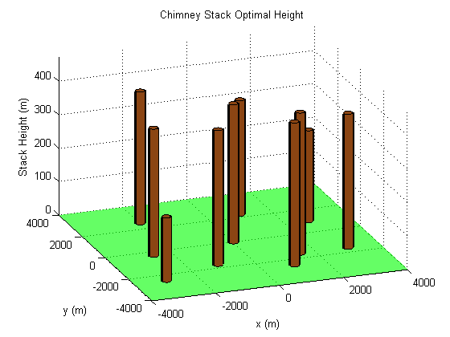 最適化結果のチェック
fseminf によって、制約の離散化された極大値が指定の境界を下回ることを保証することで、半無限制約がどこでも満足されると判断されることを思い出してください。煙突の高さが最適な場合の二酸化硫黄の地表濃度をプロットすることで、半無限制約がどこでも満足されることを確認できます。
二酸化硫黄濃度の値が最も高くなるのは、(x, y) 平面の左上隅、すなわち x = -20000m および y = 20000m です。下図で青い点で示したこのポイントは、そこにおける二酸化硫黄濃度を計算することで検証されています。
MATLAB ファイル plotSulfurDioxide を調べて、プロットの生成方法を確認します。
titleStr = 'Optimal Sulfur Dioxide Concentration and its maximum (blue)'; xMaxSD = [-20000 20000]; plotSulfurDioxide(hsopt, theta0, U0, titleStr, xMaxSD); SO2Max = concSulfurDioxide(-20000, 20000, hsopt, theta0, U0); fprintf('Sulfur Dioxide Concentration at x = -20000m, y = 20000m :%e g/m^3\n', SO2Max);
Sulfur Dioxide Concentration at x = -20000m, y = 20000m :1.250000e-004 g/m^3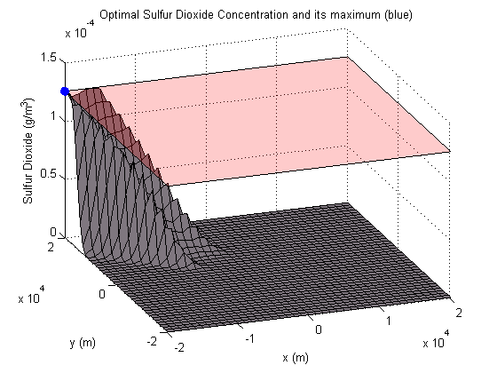
環境要因における不確定性の検討
二酸化硫黄濃度は、いくつかの環境要因に左右されます。これらの要因は、上記の問題において固定値で保持されています。そのうちの 2 つが風速と風向です。すべての問題パラメーターの詳細は、上記の参考文献を参照してください。
風速と風向に関してシステムの動作の変化を調べることができます。デモのこの部分では、風向が 3.82 rad から 4.18 rad に変化し、平均風速が 5 ～ 6.2 m/s の範囲で変動する場合でも、二酸化硫黄限度が満たされることを確認します。
領域 R において二酸化硫黄濃度が上限を超えないことを保証するために、半無限制約を実装する必要があります。この制約は、風速と風向のすべての組み合わせについて可解でなければなりません。
このような制約は、4 つの "無限" 変数 (風速、風向、地表の x-y 座標) を持つことになります。しかし、fseminf に提供される半無限制約が持つことができる "無限" 変数は 2 つのみです。
fseminf にとって適切な形でこの制約を実装するには、以前の問題における煙突の最適な高さでの SO2 濃度を思い出す必要があります。特に、SO2 濃度の値が最も高くなるのは、x = -20000m および y = 20000m です。"無限" 変数の数を減らすために、不確定性が存在する場合にも SO2 濃度の値がこのポイントで最も高くなると仮定します。さらに、この点の SO2 濃度は、風速と風向のどのような組み合わせでも を下回らなければなりません。
これは、この問題の "無限" 変数が風速と風向であることを意味します。この制約がどのように実装されているのかを確認するために、MATLAB ファイル uncertainAirPollutionCon を調べます。
type uncertainAirPollutionCon.m
function [c, ceq, K, s] = uncertainAirPollutionCon(h, s)
%UNCERTAINAIRPOLLUTIONCON Constraint function for air pollution demo
%
% [C, CEQ, K, S] = UNCERTAINAIRPOLLUTIONCON(H, S) calculates the
% constraints for the fseminf Optimization Toolbox (TM) demo.This
% function first creates a grid of wind speed/direction points using the
% supplied grid spacing, S. The following constraint is then calculated
% over each point of the grid:
%
% Sulfur Dioxide concentration at x = -20000m, y = 20000m <= 1.25e-4
% g/m^3
%
% See also AIRPOLLUTIONCON, AIRPOLLUTION
% Copyright 2008 The MathWorks, Inc.
% $Revision: 1.1.4.12.2.1 $ $Date: 2010/07/29 21:28:56 $
% Maximum allowed sulphur dioxide
maxsul = 1.25e-4;
% Initial sampling interval
if nargin < 2 || isnan(s(1,1))
s = [0.02 0.04];
end
% Define the grid that the "infinite" constraints will be evaluated over
w1x = 3.82:s(1,1):4.18; % Wind direction
w1y = 5.0:s(1,2):6.2; % Wind speed
[t1,t2] = meshgrid(w1x,w1y);
% We assume the maximum SO2 concentration is at [x, y] = [-20000, 20000]
% for all wind speed/direction pairs.We evaluate the SO2 constraint over
% the [theta, U] grid at this point.
K = concSulfurDioxide(-20000, 20000, h, t1, t2) - maxsul;
% Rescale constraint to make it 0(1)
K = 1e4*K;
% No finite constraints
c = [];
ceq = [];
この制約関数は、上記と同じ 3 つの部分に分けることができます。
1. 制約評価のための初期メッシュ サイズの定義
"Initial sampling interval" というコメントに続くコードで、メッシュ サイズを初期化します。
2. 制約評価で使用するメッシュの定義
次のコード部分では、最初の問題で使用したものと同様の構成を使用してメッシュ (ここでは風速と風向) を作成します。
3. メッシュ全体の制約の計算
コードの残りの部分では、風速/風向メッシュの各ポイントにおける SO2 濃度を計算します。次に、これらの制約が上記の制約関数から fseminf に返されます。
ここで、環境要因における不確定性を考慮した煙突高さ問題を解くために、fseminf を呼び出すことができます。
[hsopt2, sumh2, exitflag2] = fseminf(@(h)sum(h), h0, 1, ... @uncertainAirPollutionCon, [], [], [], [], lb); fprintf('\nMinimal computed cumulative height of chimney stacks with uncertainty:%7.2f m\n', sumh2);
Local minimum possible.Constraints satisfied. fseminf stopped because the predicted change in the objective function is less than the default value of the function tolerance and constraints were satisfied to within the default value of the constraint tolerance. Minimal computed cumulative height of chimney stacks with uncertainty:3812.70 m
パラメーターの不確定性がある場合とない場合で、計算された煙突の最小累積高さがどの程度異なるかを確認できます。不確定性が問題に追加された場合に最小累積高さが増すことを確認できるはずです。予想されるこの高さの増加によって、指定範囲内の風速/風向のすべての組み合わせについて SO2 濃度が規制の最大値を下回ることができます。
二酸化硫黄のプロットを調べることで、関心領域全体において二酸化硫黄濃度がこの上限を超えないことをチェックできます。所定の (x, y) ポイントで、指定範囲内の風速と風向について SO2 の最大濃度をプロットします。X-Y 平面の左上隅を拡大していることに注意してください。
titleStr = 'Optimal Sulfur Dioxide Concentration under Uncertainty';
thetaRange = 3.82:0.02:4.18;
URange = 5:0.2:6.2;
XRange = [-20000,-15000];
YRange = [15000,20000];
plotSulfurDioxideUncertain(hsopt2, thetaRange, URange, XRange, YRange, titleStr);
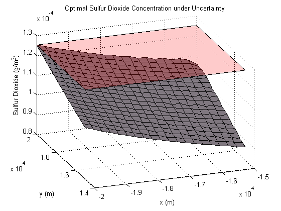 最後に、問題定義に不確定性が存在する場合の最適な高さにおける大煙突をプロットします。
plotChimneyStacks(hsopt2, 'Chimney Stack Optimal Height under Uncertainty');
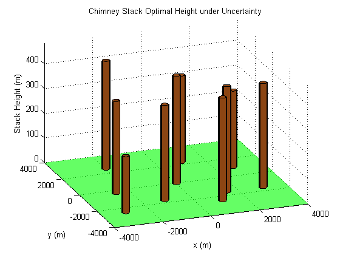 半無限プログラミング アルゴリズム fseminf では、多数のオプションを使用できます。詳細は、『Optimization Toolbox™ ユーザー ガイド』の章「Optimization Toolbox ソルバーの使用」の「制約付き非線形最適化: fseminf 問題の定式化とアルゴリズム」を参照してください。